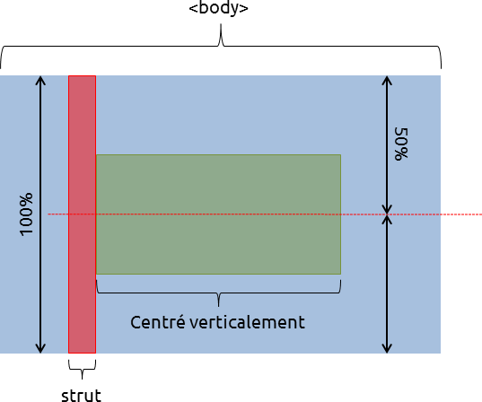

Aaah, centrer des éléments, une question récurrente tant les cas sont nombreux. CSS offre quelques possibilités natives, mais toute la difficulté de l'exercice est de les exploiter comme il faut pour obtenir le rendu souhaité. Je vais ainsi parcourir tous les cas solvables en pur CSS, et tant qu'à faire montrer comment les résoudre. Finis les <center> ! Finis les align="center" ! Accrochez-vous, c'est parti !
On commence doucement ; le centrage horizontal dans le flux est le plus simple à réaliser puisqu'à chaque cas correspond une propriété CSS. Reste juste à savoir laquelle correspond à chaque cas. En l'occurrence cela dépendra du type d'élément à centrer.
Élément bloc
Pour rappel, un élément bloc est soit un élément de type bloc — c'est-à-dire qui possède par défaut la valeur block à sa propriété display —, soit un élément auquel on a attribué display: block;. Pour centrer un tel élément, c'est très simple, il suffit d'utiliser la propriété margin afin de spécifier sa marge droite et gauche à auto. Pourquoi ? Parce qu'un tel comportement est clairement défini dans la spécification :
If both 'margin-left' and 'margin-right' are 'auto', their used values are equal. This horizontally centers the element with respect to the edges of the containing block.
Si 'margin-left' et 'margin-right' valent 'auto', leurs valeurs effectives sont égales, ce qui centre l'élément dans son bloc conteneur.
If 'margin-top', or 'margin-bottom' are 'auto', their used value is 0.
Si 'margin-top' ou 'margin-bottom' vaut 'auto', leur valeur effective est zéro.
Une dernière précision ; les éléments bloc non remplacés prennent par défaut toute la largeur de leur conteneur. Si vous voulez visualiser le centrage d'un tel élément, il faudra donc lui fixer une largeur inférieure à celle de son conteneur.
Mais c'est quoi un élément...
Tututut je l'ai sentie venir à des kilomètres celle-là :p
Pour faire simple, un élément remplacé est simplement un élément dont le contenu n'est pas considéré par CSS. Par exemple quand vous insérez une balise <img />, son contenu va être remplacé par l'image pointée par son attribut src. Vous pourrez alors styler l'élément, mais n'aurez aucun moyen de cibler son contenu.
Ces éléments ont généralement ce qu'on appelle des dimensions intrinsèques (typiquement les dimensions originales d'une image). Si non, alors :
the used value of 'width' becomes 300px. If 300px is too wide to fit the device, UAs should use the width of the largest rectangle that has a 2:1 ratio and fits the device instead.
la valeur effective de 'width' utilisée est 300px. Si 300px est une largeur supérieure à celle du dispositif d'affichage, les agents utilisateur (navigateurs généralement) devraient utiliser à la place la largeur du plus grand rectangle tenant sur l'affichage avec un ratio de 2:1.
D'où la précision ; un élément bloc remplacé n'aura généralement pas besoin d'avoir une largeur explicite pour apparaître centré.
Élément en-ligne
Si un élément n'est pas un bloc, alors il est en-ligne. Cela concerne généralement les valeurs (par défaut ou spécifiées) inline et inline-block de la propriété display, mais également le texte. Pour centrer un tel élément, il faut cette fois agir sur son conteneur, qui est le plus souvent son plus proche bloc parent. Ainsi il suffit de lui appliquer :
#parent { text-align: center; }
Ce CSS permettra à un élément de centrer tous ses fils en-ligne. J'insiste sur « tous » car la propriété text-align est héritée. De ce fait, tout se passera comme si cette propriété était appliquée à tous les fils de #parent. Pour rétablir l'alignement normal, il suffira d'utiliser text-align: left; (si vous écrivez de gauche à droite bien sûr) sur le conteneur voulu. Pour plus d'informations, je vous invite à consulter la spécification du W3C.
Table
Avant de sortir du flux, faisons un petit aparté pour les curieux. Les tableaux HTML ont par défaut la valeur table à leur propriété display, alors bloc ou en-ligne ? Si vous avez répondu bloc c'est gagné, car :
table [...] specifies that an element defines a block-level table
table [...] spécifie à l'élément de générer une table dans un contexte bloc.
On utilise donc également margin: auto; pour centrer les tableaux… sauf sur IE<7. Pour ces navigateurs, tout se passe comme si la table était dans un contexte en-ligne, auquel cas il faut alors la centrer en spécifiant text-align: center; à son parent. À titre indicatif un tel comportement peut être retrouvé dans les navigateurs actuels grâce à la valeur inline-table de la propriété display.
Hors du flux
CSS ne permet pas nativement de centrer des éléments hors du flux. Toutefois il existe quelques astuces qui dans certains cas peuvent le permettre. Un élément est hors du flux s'il est flottant ou fait partie du modèle de positionnement absolu, c'est-à-dire que sa propriété position vaut absolute ou fixed. De tels éléments sont forcément des blocs, vous pourrez donc centrer leur contenu en-ligne comme on vient de le voir.
Flottants
float: center; n'existe pas. Certains trouvent cela logique, certains s'en plaignent, et d'autres s'en foutent, car ils savent centrer des flottants. Seule condition requise ? Avoir deux conteneurs, ce qui est assez facile. Généralement la question se pose lors de la création d'un menu, une liste de liens. On dispose alors de notre premier conteneur : <ul>. Il suffira donc de l'englober par un <div> pour remplir nos conditions. Comment styler tout ça maintenant ?
Nous allons utiliser le positionnement relatif, qui permet de déplacer un élément par rapport à sa position dans le flux normal. Pour ce faire, nous disposons des propriétés top, right, bottom et left, qui acceptent des valeurs en pourcentage. Ainsi :
#element { left: 50%; }
Voudra dire que nous déplaçons notre élément vers la droite d'une distance correspondant à la moitié de celle de son conteneur, ce qui place son extrémité gauche au centre de son conteneur. À partir de là, il suffit de déplacer vers la gauche les fils de cet élément d'une distance égale à la moitié de la somme de leur largeur. Et c'est possible en CSS ! En effet si <ul> est déclaré flottant, sa largeur sera égale à la somme de celle de ses fils. Il suffit alors de le déplacer de 50% vers la droite, et de déplacer chaque <li> de 50% vers la gauche. Le conteneur global servira simplement à éviter que ces décalages ne provoquent un débordement de la zone d'affichage. Si l'on traduit tout en CSS, cela nous donne
#wrapper {
/* masque les débordements et englobe le menu */
overflow: hidden;
}
#menu,#menu li {
/* on supprime les éventuels styles par défaut */
margin: 0;
padding: 0;
list-style: none;
/* float permet à l'élément de prendre la largeur de son contenu */
float: left;
position: relative;
}
#menu {
/* on décale le menu vers la droite de la moitié de la largeur disponible */
left: 50%;
}
#menu li {
/* on décale chaque item vers la gauche de la moitié de la largeur du menu */
right: 50%;
}
Vraiment pas compliqué, vous voyez ?! Le tout est d'y penser bien sûr. ;) Bon il est temps de terminer la partie horizontale ; une petite dernière et on commencera le plus intéressant !
Positionnement absolu
L'astuce permettant de centrer un tel élément est basée sur le même principe que celle des flottants. La seule différence vient du fait que notre élément ne pourra pas être englobé dans un conteneur, ce qui ajoute seulement une contrainte, mais de taille : vous devez spécifier une largeur à cet élément. En effet, dans l'exemple précédent nous pouvions déduire la largeur de nos flottants grâce au conteneur, ce qui n'est plus possible ici (puisqu'un élément faisant partie du modèle de positionnement absolu n'impacte pas le flux). Alors faute de pouvoir la déduire, on va la spécifier. Le principe reste ensuite exactement le même, mis à part qu'on ne peut agir que sur l'élément. On va donc le décaler de 50% vers la droite puis utiliser une marge négative pour le décaler de la moitié de sa largeur vers la gauche.
Si on décide de lui attribuer 400px de large, alors on écrira :
line-height, c'est une propriété que vous avez sûrement utilisée, et sans doute sans la comprendre :p On va donc se rattraper, car cela nous sera utile pour la suite. Le premier réflexe à avoir quand on cherche des infos sur le HTML/CSS, c'est d'aller voir la spécification. Le site du W3C est assez mal référencé alors n'hésitez pas à ajouter W3C devant les termes de votre recherche.
En cherchant w3c line-height, le premier lien nous amène sur une page intitulée Visual formatting model details, dans laquelle on trouve la section Line height calculations: the 'line-height' and 'vertical-align' properties ; jetons-y un coup d'oeil.
...
C'est compliqué n'est-ce pas ? :p Bon je vais être sympa (pour une fois) ; la partie qui nous intéresse est la suivante :
CSS assumes that every font has font metrics that specify a characteristic height above the baseline and a depth below it. In this section we use A to mean that height (for a given font at a given size) and D the depth. We also define AD = A + D, the distance from the top to the bottom. [...] Note that these are metrics of the font as a whole and need not correspond to the ascender and descender of any individual glyph.
User agent must align the glyphs in a non-replaced inline box to each other by their relevant baselines. Then, for each glyph, determine the A and D. Note that glyphs in a single element may come from different fonts and thus need not all have the same A and D. If the inline box contains no glyphs at all, it is considered to contain a strut (an invisible glyph of zero width) with the A and D of the element's first available font.
Still for each glyph, determine the leading L to add, where L = 'line-height' - AD. Half the leading is added above A and the other half below D, giving the glyph and its leading a total height above the baseline of A' = A + L/2 and a total depth of D' = D + L/2.
En français, cela veut dire que pour chaque élément dans un contexte en-ligne, le navigateur va déterminer sa hauteur par défaut en fonction des caractéristiques de la police utilisée. Cette hauteur sera la somme des hauteurs sur (A) et sous (D) la baseline :
Maintenant que se passe-t'il lorsqu'on spécifie un line-height ? Eh bien le navigateur va calculer la hauteur supplémentaire à allouer à l'élément en soustrayant A et D au line-height, et va ajouter une moitié du résultat à A et l'autre à D.
Du coup le texte se retrouve centré verticalement par rapport au line-height de son parent, vous voyez où je veux en venir..?!
Centrer une ligne de texte dans un conteneur de hauteur fixe
On sait maintenant qu'en spécifiant un line-height, le contenu en-ligne sera centré dans ce dernier. On pourra l'utiliser soit sur le conteneur, soit sur le contenu en-ligne. En l'occurrence une ligne de texte dans un bloc génère une boîte en-ligne anonyme et donc impossible à cibler avec CSS.
Pour centrer le texte ci-dessous verticalement dans son paragraphe :
<p>trololol</p>
On aura juste à spécifier au paragraphe une hauteur de ligne égale à sa hauteur, disons 5em :
p {
line-height:5em;
}
D'où la problématique suivante :
Centrer plusieurs lignes de texte dans un conteneur de hauteur fixe (partie 1)
De ce qu'on vient de voir, on peut déjà déduire qu'il faudra englober le texte dans un conteneur, mais quel genre de conteneur ? Un élément bloc ne changera rien à la problématique puisqu'au final le texte générera une boîte en-ligne, on se retrouvera dans le même cas que ci-dessus.
Un élément en-ligne alors ? Il suffirait de modifier son line-height pour rétablir un interlignage correct !
Bien pensé, logiquement ça se tient. Mais le soucis vient de line-height lui-même :
On a block container element whose content is composed of inline-level elements, 'line-height' specifies the minimal height of line boxes within the element.
Sur un bloc conteneur dont le contenu est composé d'éléments en-ligne, 'line-height' spécifie la hauteur minimale des lignes de texte à l'intérieur de bloc.
Donc spécifier une hauteur de ligne inférieure à un élément en-ligne ne changerait tout simplement rien. Que fait-on alors ?
L'idéal serait un type d'élément qui le place dans un contexte en-ligne afin de prendre en compte le line-height du parent, mais qui formate son contenu à la manière d'un élément bloc, afin que nous puissions lui définir une hauteur de ligne correcte.
...
inline-block !
La valeur inline-block de la propriété displayremplit ces conditions (c'en est presque miraculeux), on va donc s'empresser d'englober notre texte avec.
<p>
<span>
trololol
<br />
again
</span>
</p>
p { line-height:5em; }
span {
display:inline-block;
line-height:1.3em;
}
Eeeet... ce n'est pas centré. Et c'est logique en fait.
Notre élément est dans un contexte en-ligne ; du point de vue de son conteneur, il peut donc être considéré comme un unique caractère. Or les caractères sont alignés verticalement sur leur baseline.
The baseline of an 'inline-block' is the baseline of its last line box in the normal flow, unless it has either no in-flow line boxes or if its 'overflow' property has a computed value other than 'visible', in which case the baseline is the bottom margin edge.
La ligne de base d'un élément 'inline-block' est la ligne de base de sa dernière ligne dans le flux normal. En l'absence de ligne dans le flux ou si sa propriété 'overflow' a une valeur autre que 'visible', sa ligne de base sera sa bordure inférieure.
Dans notre cas la ligne de base du <span> est très proche de la bordure inférieure. Si vous ajoutez du texte en dehors, vous verrez que sa ligne de base sera alignée avec celle de notre élément, ce qui provoque le décalage.
Mais dans l'exemple il n'y avait pas de texte en dehors de l'élément, alors sur quoi le navigateur s'est-il basé pour l'aligner ?
Bonne question ; la réponse tient en un seul mot : "strut". Si vous avez lu le pavé en anglais un peu plus haut, vous savez que c'est un caractère invisible de largeur nulle.
Eh bien lorsqu'on spécifie un line-height sur un bloc conteneur, tout se passe comme si chaque boîte en-ligne commençait par un strut, donc un caractère avec pour propriété le line-height de son conteneur ainsi que sa police.
[...] exactly as if each line box starts with a zero-width inline box with the element's font and line height properties. We call that imaginary box a "strut." (The name is inspired by TeX.).
[...] exactement comme si chaque ligne commençait par une boîte en-ligne avec la même police et la même hauteur de ligne, mais de largeur nulle. Cette boîte imaginaire est appelée "strut" (étai). (Terme inspiré de Tex.)
Donc la baseline de notre <span> en inline-block est alors alignée avec la baseline du strut !
Alors vous allez me dire
c'est bien beau de savoir pourquoi ce n'est pas centré, mais si on lit ce tuto c'est justement pour savoir comment centrer !
Ce qui me permet de faire une élégante transition vers le chapitre suivant :p
Centrer plusieurs lignes de texte dans un conteneur de hauteur fixe (partie 2)
Si vous avez bien tout compris, tout ce qu'il nous manque à présent c'est un moyen pour dire à notre élément "ne t'aligne pas verticalement par rapport à ta ligne de base".
Et ceci, CSS nous en offre la possibilité ! "Alignement vertical", cela nous donne vertical-align ! "Milieu", c'est middle !
vertical-align [...] This property affects the vertical positioning inside a line box of the boxes generated by an inline-level element.
Houlà, qu'est ce que ça donne en français..? "Cette propriété affecte l'alignement vertical des boîtes générées par des éléments dans un contexte en-ligne à l'intérieur d'une ligne". Mouais pas très convivial tout ça.
En gros ce qu'il faut retenir, c'est que chaque élément a deux caractéristiques :
son contexte : c'est la manière dont il est placé dans le flux
son formatage : qui détermine comment son contenu se comportera
Quand on parle d'élément bloc, c'est un élément qui a un contexte et un formatage bloc. De même un élément en-ligne est un élément qui a un contexte et un formatage en-ligne.
display:inline-block; lui, permet de définir pour un élément un contexte en-ligne et un formatage bloc, de ce fait ce dernier peut prendre en compte vertical-align. Mais c'est également le cas pour les éléments remplacés dans un contexte en-ligne (images, champs de formulaires...) et les cellules de tableau (valeur table-cell de display), ce qui fait dire à un certain M@teo que cette "propriété [est] normalement réservée aux tableaux" :p
À ce stade, j'espère que vous commencez à entrevoir l'immense potentiel de cette propriété. On a déjà constaté qu'on pouvait centrer verticalement un bloc (puisqu'au final les lignes de texte n'étaient qu'un exemple ; on aurait pu mettre n'importe quoi, l'important c'est qu'aucune hauteur n'a été fixée) dans un conteneur, mais également, centrer ce bloc par rapport à une ligne de texte.
Et ce bloc, on sait qu'il est pris en compte comme un caractère, on en déduit...
Aligner des éléments les uns par rapport aux autres
Eh bien c'est très simple, il suffit que ces éléments prennent en compte vertical-align et qu'ils la définissent à middle. Ainsi le centre de tous les éléments sera aligné et il en résultera que ces derniers seront centrés verticalement les uns par rapport aux autres, CQFD !
Le conteneur devient ici optionnel, il prendra simplement la hauteur nécessaire pour englober tous les éléments.
Hephephep d'un conteneur de hauteur fixe tu es passé à plus de conteneur du tout, t'aurais pas loupé une partie ?
Comment ? Vous voulez centrer du contenu dans un conteneur de hauteur fluide ?
Désolé de vous décevoir, mais dans l'absolu ça n'est pas possible. En effet une hauteur fluide correspond à la hauteur nécessaire à un conteneur pour englober tous ses enfants dans le flux, et cette dernière est inconnue du navigateur. Donc ce dernier n'ayant aucun "point de repère", on ne peut pas se baser sur une hauteur qu'on n'a pas spécifiée.
Eh mais attendez il reste encore une possibilité pour spécifier une hauteur..!
Centrer plusieurs lignes de texte dans un conteneur de hauteur fixe (partie 3)
Prenons un bloc avec une hauteur en pourcentage. Sa hauteur est bien spécifiée mais on ne peut pas utiliser line-height puisque pour ce dernier une valeur en pourcentage serait relative à sa taille de police :
'line-height' [...] Percentages: refer to the font size of the element itself
Du coup les astuces vues plus haut ne fonctionnent plus, mais heureusement il existe une solution générique qui fonctionne dès que le conteneur à une hauteur spécifiée, c'est à dire dès que vous avez donné une valeur à sa propriété height (à la différence des premiers exemples où la hauteur de l'élément dépendait de son line-height).
Effectivement, spécifier une hauteur à un élément permet à ses enfants blocs (de formatage bloc ;) ) de spécifier une hauteur relative à cette dernière, ce à l'aide des pourcentages.
height:100%; voudra donc dire "la hauteur spécifiée de mon conteneur". Si cette dernière n'est pas renseignée alors tout se passera comme si vous aviez auto à la place de 100% ; les conséquences dépendront alors du formatage de l'élément.
Nous savons que nous pouvons centrer verticalement des éléments les uns par rapport aux autres, et que si une hauteur est spécifiée à un élément alors ses enfants peuvent prendre cette dernière, donc...
On peut centrer un élément dans un conteneur de hauteur spécifiée.
Eeeuuh je vois pas le rapport moi o_O
C'est sûr qu'un bon schéma vaut mieux qu'un long discours :p

Notez l'analogie avec le strut. En effet nous créons un élément qui permettra d'aligner verticalement les autres éléments dans un contexte en-ligne. Cet élément aura de plus généralement une largeur nulle si sa seule utilité est le centrage.
Le code réalisant cela est très simple et traduit tout ce qui a été dit précédemment ; la seule subtilité réside dans le fait qu'aucun espace/tabulation/saut de ligne ne doit séparer les éléments puisque ces derniers apparaîtront comme un espace dans un contexte en-ligne (ben oui, ça ne vous étonne pas qu'il y ait un espace dans votre texte quand vous sautez une ligne dans votre code ? :p ).
html,body {
/* suppression des éventuels styles par défaut */
margin:0;
padding:0;
/* on spécifie un repère pour le calcul des hauteurs */
height:100%;
}
.strut, #content {
/* on permet à ces éléments de s'aligner verticalement */
display:inline-block;
vertical-align:middle;
}
.strut {
/* hauteur de la fenêtre, par rapport à laquelle les éléments vont être alignés */
height:100%;
}
#content {
/* des dimensions au hasard */
width:50%;
height:50%;
/* on le rend visible */
background:red;
}
.strut, #content {
display:inline;
zoom:1;
}
Et hop !
Ce qui est génial avec cette technique, c'est que les éléments peuvent avoir une hauteur fluide (c'est-à-dire non spécifiée) et seront toujours centrés à coup sûr, sans aucun calcul de votre part.
Ahahaha eeeh oui vous ne pensiez pas vous en tirer comme ça j'espère ? :pirate: En effet IE6 et IE7 ont quelques problèmes avec inline-block ; rien d'insurmontable heureusement, cette propriété n'est juste pas prise en charge.
o_O
(j'aime faire durer le suspense)
Cependant le comportement qu'elle confère est reproductible : pour IE<8, inline-block correspond à un élément inline qui possède le layout. Le layout, c'est une bonne dose de prise de tête qui peut rendre rapidement fou tout intégrateur pas assez préparé, Alsacréations nous en fait ici une description rapide.
Mais fort heureusement, display: inline-block; a tout de même un effet sur ces versions d'Internet Explorer : cette règle confère le layout à un élément !
Du coup cela veut dire que pour un élément de type en-ligne on n'aura rien à ajouter de plus que :
display:inline-block;
Puisque cet élément aura un contexte en-ligne et le layout. Toutes les conditions sont ainsi réunies et notre élément se comportera bien sur tous les navigateurs.
Et si l'élément est de type bloc ? Logiquement dans ce cas il faudra lui spécifier d'être en-ligne. Seulement si nous faisons cela alors le comportement ne sera plus celui attendu sur les navigateurs "normaux" puisque la propriété display sera surchargée.
La problématique suivante est donc simplement de spécifier l'élément en-ligne pour IE<8, ce qui peut se faire de deux façons :
utiliser un hack CSS
utiliser une feuille de style spéciale pour IE<8
Le hack
Un hack CSS est une technique qui consiste à écrire du code non standard dans le but d'exploiter les faiblesses des parseurs CSS de certains navigateurs afin de cibler ces derniers. Et ça tombe bien pour IE6 et IE7 il y en a un plutôt simple :
Ajouter un astérisque * devant une règle CSS permet effectivement de ne faire prendre en compte cette règle que par les versions d'IE qui nous intéressent. Notez juste que cette règle devra se trouver après inline-block pour pouvoir la surcharger.
Mais si on la surcharge... alors l'élément n'a plus le layout. C'est donc le moment d'utiliser une autre propriété qui confère le layout : zoom.
Attention au fait que cette propriété est "IE only", elle n'est pas standard et tout comme le hack précédent elle fera échouer la validation de votre CSS. Du coup le code devient
#element {
display:inline-block;
/* hack IE<8 */
*display:inline;
/*
* cette propriété n'est pas standard,
* on peut donc l'utiliser sans hack
* puisqu'elle ne sera pas interprétée
* par les autres navigateurs
*/
zoom:1;
}
Feuille de style spécifique
Si dans une moindre mesure la validation est importante pour vous, vous pouvez déporter les règles spécifiques à IE<8 dans une feuille de style qui leur sera dédiée. Pour cela on utilisera les commentaires conditionnels, du genre
Du coup le hack n'est plus nécessaire. Le CSS "spécial IE" ne sera pas forcément valide, mais votre CSS principal pourra alors l'être !
Allez, il est temps de virer toutes ces balises <center> obsolètes ! Pour la petite histoire cette balise a été dépréciée en HTML4, publié en décembre 1997, il y a donc de fortes chances qu'elle ait déjà été abandonnée avant même que vous commenciez le HTML..! ^^
Notez que je n'ai pas parlé du centrage vertical des éléments positionnés en absolute, mais ceci pour la simple raison que la technique est la même qu'horizontalement.
Mon but n'est ici pas de vous fournir un simple pense-bête, mais de vous faire comprendre les dessous du positionnement CSS pour les appliquer au centrage. Si vous avez tout compris alors vous gagnerez des compétences et une autonomie conséquente, toujours bon à prendre ;)
Un TP verra sûrement le jour mais en attendant vous devriez pouvoir vous débrouiller. :p